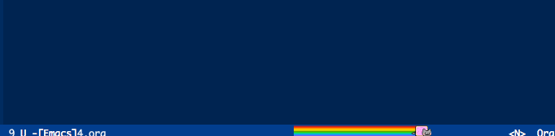

文件访问
找到需要的文件是每个程序员每天都要做很多遍的事情，因此提高此效率是很有必要的。emacs比其他编辑器效率更高的特性之一就是用buffer代替了通过文件树访问文件；但是通过文件路径访问文件仍然是绕不过去的。本章主要关注这一问题。
注意，这里把文件和路径作为同一种实体处理，因为找到文件或者路径再打开无非就是多了一步，也避免分的太细而引起的繁琐。
定位文件分为直接定位与搜索两种，而再细分大概可以分为四种方式：
| 方式 | 解释 | 特性 | 相关包、函数 |
| 直接访问 | 利用系统的文件树直接访问 | 基本行为，效率最低，当然也最稳定 | find-file |
| 直接搜索 | 用户指定搜索范围以及关键词，工具帮助用户找到文件 | 小范围效率高，例如工程内 | find-grep-dired find-name-dired projectile-find-file |
| 自动检索 | 工具帮助用户记录平时访问的路径、文件，在此范围内切换 | 目的性更强，因此效率很高 | recentf-list projectile-switch-project |
| 显式记录 | 用户显式的记录地点，用于以后的搜索范围 | 目的性最强，但是要用户自己维护列表 | bookmark |
直接访问
定位文件即找到目标文件，最简单的方式当然是直接输入路径。emacs提供了find-file，而如果装了helm/ivy，路径的补全和识别都能得到很大的提高：

直接搜索
直接搜索由于没有任何历史记录来缩小搜索范围，因此会慢一些。
find-name-dired
这类指令实际上封装了操作系统shell的指令，在很多地方都能看到emacs类似的行为。例如，dired实际上是封装了ls，而这个指令实际上封装了find，然后又利用了dired。而tramp这种远程访问工具封装了ssh、ftp、adb等指令，然后又利用了dired；而如果在远端主机搜索，又用上了find-grep-dired。
如果要搜索当前路径下所有后缀名为org的文件，实际上执行的是下面的指令，最终结果是以dired展示出来：
find . \( -iname \*.org \) -ls
find-grep-dired
与上个指令类似，但是功能是搜索内容。如果找寻文件中包含“org”的文件，封装的指令如下：
find . \( -type f -exec grep -q -e org \{\} \; \) -ls- projectile-find-file
projectile封装了ag指令，也就是silver searcher 。projectile-find-file提供了在工程内搜索文件名的功能，类似find-name-dired；但是由于自动限制了范围，所以更方便。
自动检索
自动检索的意思就是工具会以某种规则替用户记录其访问过的路径，以自动的限定搜索范围。
最近访问
另一种访问文件的方式是使用最近访问路径的方式。目前我访问路径的方式有以下三种：
- 通过emacs
- 通过命令行
- 通过MacOS的Finder
因此把这三种方式归结起来就是我所有访问过的路径。具体配置是这样的：
(defun slegetank/recent-directories () "Return recent access directories." (delete-dups (append (delq nil (mapcar (lambda (filename) ; recentf (let ((directory (file-name-directory filename))) (and (not (file-remote-p directory)) (file-exists-p directory) directory))) recentf-list)) (delq nil (mapcar (lambda (directory) ; finder recent (and (file-exists-p directory) (concat directory "/"))) (split-string (shell-command-to-string (format "python %s/init/osx-recent-dir.py" user-emacs-directory)) "\n" t))) (when (file-exists-p "~/.z") ; append lines from z; append top 20 dirs (mapcar (lambda (directory) (and (file-exists-p directory) (concat directory "/"))) (split-string (shell-command-to-string "cat ~/.z | sort -r -n -k 2 -t \"|\" | cut -f 1 -d \"|\" | head -n 20") "\n" t))))))
按工程切换
projectile提供了按工程切换路径的方式，实际上也就是每次进入git目录记录以下，也是不错的切换方式。
显式记录
利用书签（bookmark），记录最经常要访问文件、路径，可以更快的定位到要去的地方。其官方文档在这里：https://www.gnu.org/software/emacs/manual/html_node/emacs/Bookmarks.html
初看起来有些麻烦，但是如果牵扯到远程访问这种行为的时候就变成了很便捷的一种方式。例如通过tramp用ssh访问了一个远程主机，如果每次再要访问都需要ssh鉴权，然后从根目录找到自己想要去的目录就很麻烦。这时就可以在想要再次访问的路径或者buffer用bookmark-set设置一个书签。下次再要访问的时候直接bookmark-jump就可以直接跳过去了，emacs会处理好ssh、目录定位这些事情。
访问特定路径
除了上面提到的这些可以抽象出来的公有访问方法，还可以自己发挥想象力在自己平时的工作中。例如我平时的工作会有下面这些需求：
- 访问Finder当前打开的路径
- 访问Xcode的当前路径
- 访问Android Studio的当前路径
那么就可以找一下是否有什么命令行可以得到指定的路径字符串，例如访问Finder：
(defun custom-goto-finder-directory () "Open OSX Finder path with dired" (interactive) (dired (file-name-as-directory (s-trim (shell-command-to-string "osascript -e \'tell app \"Finder\" to POSIX path of (insertion location as alias)\'")))))
上面的例子就是用命令行执行了一个apple script，获得到Finder当前窗口的路径，然后用dired打开这个路径。